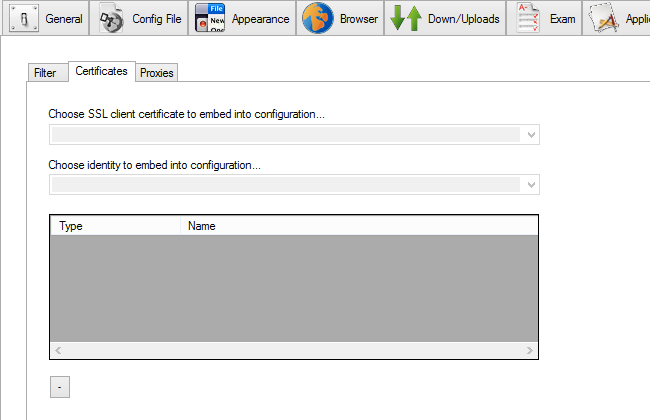
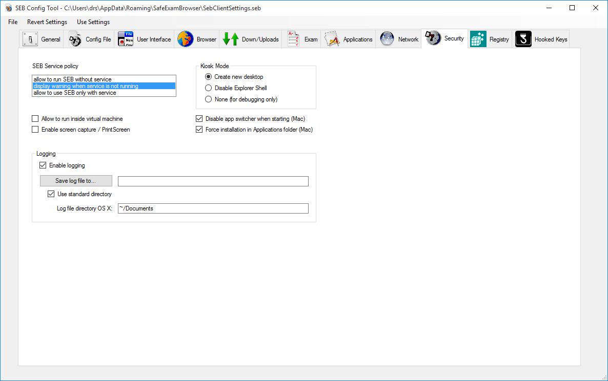
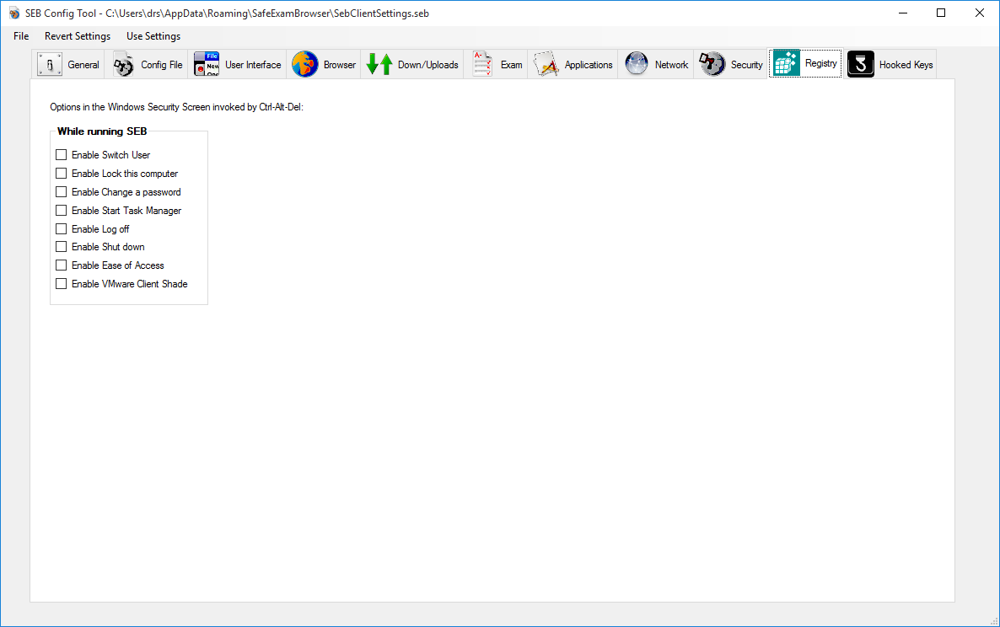
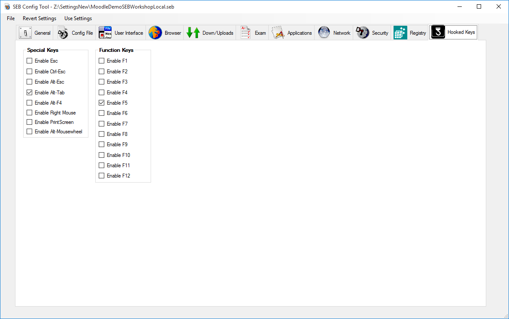

Safe Exam Browser 2.0 for Windows |
English |
Safe Exam Browser – SEB for Windows opens a web browser window without navigation elements and locks the computer into a kiosk mode, which prevents from switching to other applications or quitting SEB untimely. Safe Exam Browser 2.0 facilitates secure exams on unmanaged computers like students' own laptops. Currently SEB directly supports the wide spread learning management systems (LMS) Moodle and ILIAS, although it can easily be connected with most other web-based online quiz and e-assessment systems.
Features
SEB disables the options of the Windows Security Screen (invoked by pressing Ctrl+Alt+Del), namely Lock this Computer, Switch User, Log off, Change a password, Start Task Manager, Shut down and Ease of Access. It disables the Start Menu (button in the lower left corner of the screen) with its submenus Shut down / Undock / Switch user / Log off / Lock / Restart / Sleep / Hibernate, the Task Switcher (invoked by Alt-Tab and Windows-Tab), printing. It can also be set whether users can quit SEB and if it is required to enter a quit password to do so.
Its possible to configure SEB to quit after the exam is submitted without having to enter a quit password by specifying a quit link and placing this on the summary page displayed by the LMS after submitting the exam.
In the browser window there is no right mouse (or Shift-F10) click popup window available. Besides that, the browser is supporting Quicktime, Java and Flash content (as long as the required plugins are installed on the system).
SEB detects when it was started in a virtual instead of a native environment and refuses to run. This virtual machine detector hinders manipulating SEB further when used in unmanaged environments.
SEB for Windows is based on the Mozilla Firefox/XULRunner/Gecko engine (in contrast to the WebKit browser engine used by SEB MacOSX, which is also used by Safari and some open source browsers).
SEB for Windows can be used together with additional (third party) applications during an exam. You can download and open files linked in your online exam, edit it in a third party application and then upload the results to your online quiz/LMS again.
From version 2.0 SEB uses encrypted .seb setting files which allow to individually configure SEB per exam.
Also see the preliminary how to use SEB 2.0 document explaining the concept behind SEB 2.0 and its new features.
Please understand that you also have to configure your exam system correctly to be locked down securely. SEB is generally locking down exam client computers only, not the exam system or the quiz module of a learning management system. Check documentation for your exam/learning management system on how to lock it down correctly.
Using SEB with Moodle
SEB support in Moodle has the following objectives:
- Don't display any links during an exam which would allow to navigate to other sections of Moodle or even other websites. This means the course navigation, link to the user's Moodle profile, logout, link to the University homepage etc. needs to be disabled/hidden. Only the quiz navigation (to navigate to other questions) and the "Finish attempt..." link should be visible
- Make sure a quiz can only be taken using Safe Exam Browser, display an error message if trying to open the quiz in another web browser.
- Optionally check if the correct version of SEB and legitimate SEB settings are used.
There are two options how to activate SEB support in Moodle. Both achieve the above objectives 1 and 2. Only the second option also ensures objective 3 is met:
- Enable the "classic" SEB support in Moodle: How to activate the SEB secure browser mode in a Moodle quiz. Then configure the quiz at Administration / Quiz administration / Edit settings / Extra restrictions on attempts / Browser security / Require the use of Safe Exam Browser. This option uses only a basic, not very secure check for the used browser. This may be safe enough if students can only access the exam from centrally managed university computers inside a computer lab/exam room. For other scenarios like BYOD you should use the second option.
- Use the Browser Exam Key authentication in Moodle for the connecting SEB version and its settings by installing the quiz access rule plugin in Moodle. In addition you will have to copy the Browser Exam Key hash code string into the quiz settings (Administration / Quiz administration / Edit settings / Extra restrictions on attempts / Allowed browser keys). This key is generated by SEB when you save the settings you intend to use for the exam. As this key includes a hash (checksum) of both the saved exam settings and the code signature of the used SEB version, you may have to generate and copy several Browser Exam Keys into the Moodle quiz settings, for example one for the Windows version of SEB and one for the Mac version.
Sometimes hiding course navigation, link to the user's Moodle profile, logout etc. doesn't work as expected because some custom Moodle themes don't support the secure browser mode of Moodle correctly, they display links with which students can get out of the quiz during an exam. If this happens only with your customized theme and not the standard Moodle theme, then your theme is not implemented correctly. In that case you should fix the problem in your custom Moodle theme. You may also create URL filter rules which only allow to access the exam and no other parts of Moodle, but this is not trivial and we cannot provide you with any support on that.
You may find additional information and help in the discussion boards for SEB and Moodle.
Download/Installation
You can download the SEB for Windows Installation setup program (also containing the SEB Windows configuration tool) here. Just start SafeExamBrowserInstaller.exe and follow the steps in the installation program.
SEB for Windows containing the main application executable SafeExamBrowser.exe and the configuration tool SebWindowsConfig.exe are placed in the SEB application folder named SafeExamBrowser which will be installed into the standard program folder of your computer (usually C:\Program Files or C:\Program Files (x86), depending on whether you have a 32-bit or 64-bit machine). Also a Safe Exam Browser program icon shortcut will be placed on your desktop.
Starting and Quitting SEB
When you start SEB, all currently running applications are hidden and all attached screens are covered with a dark blue background. On the main screen SEB opens its web browser window filling the whole screen (optionally the window can be resized and moved or switched to fullscreen). SEB opens the webpage at the preset Start URL, which might take some seconds. As default, as long as you don't set another Start URL (see Configuration), SEB for Windows opens the project web site.
SEB doesn't have any navigation buttons, but the key combination Ctrl-Shift-F5 can be used to reload the current page.
To quit SEB (while it's using the default settings), just press the Quit button in the SEB task bar, keys Ctrl-Q or the red close button in the browser window. Quitting SEB can optionally be switched off or password protected, also the function key exit sequence which was used in former SEB versions is still supported optionally. When SEB quits, the applications which were running before starting it will get unhidden again (as long as settings didn't force to quit those applications).
Configuration
SEB for Windows has a comfortable configuration tool which should be used for configuring SEB. You can find SebWindowsConfig.exe in the SEB application folder SafeExamBrowser which is placed into the standard program folder of your computer (usually C:\Program Files or C:\Program Files (x86), depending on whether you have a 32-bit or 64-bit machine).
In the SEB configuration tool window, settings are grouped in several panes. There you can set following parameters:
Settings in the General Pane

- Start URL: Full URL (starting with http:// or https://) of the page to open when SEB is started.
- Administrator password: Password required to open a config file for editing in the config tool. You should set an administrator password if you don't want that someone could open and examine a .seb configuration file, after knowing the encryption credentials (for example after an exam).
If you're using Mac OS X SEB clients for exams as well, you definitely should set an administrator password, as otherwise students could open the preferences window (which is build into SEB for Mac OS X) and change settings during the exam. - Confirm administrator password: Retype the administrator password. As long as it's not matching the administrator password typed in the field above, Passwords don't match is displayed below and you cannot save the configuration file.
- Allow user to quit SEB: If selected, Users can quit SEB with the Quit button in the SEB taskbar, by pressing the keys Ctrl-Q or by clicking the main browser window (the one that displays the exam) close button. Otherwise you can shutdown or reboot the computer. In a computer room in a university or school you could for example use some tool to shutdown or reboot all computers after a exam and therefore not allow students to quit SEB themselves at all. This setting has no influence on a Quit Link (if one is set, see Exam Pane).
- Ignore quit password: If selected, SEB ignores the quit password and can only be quit manually by using the exit keys.
- Ignore exit keys: If selected, SEB ignores the exit keys and can only be quit manually by entering the quit password after clicking the Quit button in the SEB taskbar, by pressing the keys Ctrl-Q or by clicking the main browser window close button.
- Quit password: This password is prompted when users try to quit SEB with the Quit button, Ctrl-Q or the red close button in the browser window. If no quit password is set, then SEB just prompts "Are you sure you want to quit SEB?".
- Confirm quit password: Retype the quit password. As long as it's not matching the quit password typed in the field above, Passwords don't match is displayed below and you cannot save the preferences.
- Exit sequence: Function keys which have to be pressed and held down together in the right order to exit SEB. This works only if ignore exit keys is not selected. Note: SEB for Mac OS X doesn't support exit keys, so in mixed environments you should prefer using a quit passwort for manually quitting SEB.
Settings in the Config File Pane

- Use SEB settings file for ... starting an exam: A configuration file saved with this option will start the exam with the according settings, but won't change the local SEB settings.
- Use SEB settings file for ... configuring a client: A SEB settings file saved with this option can be used to change the local settings of a SEB client. Usually you should encrypt it with the same password which is set as administrator password on the SEB client or none if there is no administrator password set on the SEB client yet (using an empty password prevents people from having to enter a password just when SEB is starting, unless you want this to prevent SEB being started unintentionally for example in a computer lab when there is no exam happening).
When this .seb file is opened, for example by double clicking it in Windows Explorer, then SEB is started and settings from this file are copied into the file SebClientSettings.seb which is placed in the hidden Local Application Data folder of the current user (see below for exact path).
You can also copy this file manually or with a deployment system one of the following directories:
- C:\ProgramData\SafeExamBrowser\
Exact path using Windows path variables: %PROGRAMDATA%\SafeExamBrowser\SebClientSettings.seb
(writable only with administrator rights, has first priority)
- C:\Users\<username>\AppData\Roaming\SafeExamBrowser\
Exact path using Windows path variables: %USERPROFILE%\AppData\Roaming\SafeExamBrowser\SebClientSettings.seb
or more general:
%APPDATA%\SafeExamBrowser\SebClientSettings.seb
(writable with user rights, second priority)
Please note: On a managed exam computer you probably should copy the default client settings file SebClientSettings.seb to the \ProgramData\SafeExamBrowser\ directory. If such a file exists in this location, this will be read by SEB with first priority and another file at the Local Application Data folder of the current user will be ignored. As the PROGRAMDATA directory is writable only with administrator rights, regular users cannot change the exam computer's default settings, which is the desired case on a managed computer. - C:\ProgramData\SafeExamBrowser\
- Allow to open preferences window on client (Mac only): Usually you should disable the preference window on exam clients besides for debugging purposes.
- Choose identity to be used for encrypting SEB settings file ... In this popup menu all identities (X.509 certificates with RSA public key and associated private key) in the Windows Certificate Store are listed, which can be used for encrypting and decrypting. Export the chosen identity and install it on your SEB clients, then they can decrypt .seb files encrypted with this certificate/key.
- Settings password: Password to decrypt the settings file, if one is set then it will be prompted when SEB reads the settings. For local client settings (saved on every exam client, at one of the two possible standard paths, see above) you don't have to enter any password. Then a standard password is used for encrypting these settings. This is not very safe, but you should anyways not store any really secret information (like critical admin and quit passwords or a secret exam URL) in the local client settings, for that you should use separate settings files saved with the option "Use SEB settings file for ... starting an exam".
- Confirm settings password: Retype the settings password.
- Default settings: After the user confirms, settings are reset to the default settings.
- Revert to last opened: After the user confirms, settings are reverted to the last ones loaded.
- Open settings... Lets you choose a .seb settings file which will be loaded into memory, so you can edit the settings.
- Save settings as... Lets you choose a filename and location for the SEB settings file. You have to either enter a password or choose a cryptographic identity with which the SEB settings file will be encrypted. Use the saved encrypted settings file to either start the exam in SEB or to change the local settings of a SEB client, depending on the Use SEB settings file for ... option.
Settings in the Appearance Pane

- Use browser window: Use a window for the SEB browser which can be scaled and moved around, also to another screen when available. One advantage of using a browser window is that if you're using a large wide screen display, some web pages may not be ergonomic to read. With the scalable browser window you can adjust the width of displayed web pages.
- Use full screen mode: Display the SEB browser full screen. Full screen browser mode should only be used with exam systems which display everything in one main window and don't open auxilary windows: When a web page opens in a new window, this will be hidden behind the full screen main browser window when the user clicks into that. In SEB 2.0.2 you cannot access single windows in the SEB task bar or with Alt-Tab (this will be available in SEB 2.1). You can only use the key combination Alt-Space to show the window menu for the full screen main browser window and minimize it with the according command, then you can access the window hidden behind the full screen window.
- Main browser window size: You can set the width and height of the main SEB browser window as absolute pixel values or a percentage of the screen width or height. You can enter the dimensions (in pixels or percent values) in the text field or select one of the predefined values in the pop down menu.
- Main browser window horizontal positioning: You can choose how the window will be positioned horizontally if it doesn't fill the full screen width: Left, Center, Right.
- Enable browser window toolbar (Mac only): Indicates if a toolbar is displayed on top of the browser window which can also be hidden by the user if it's disturbing.
- Hide toolbar as default (Mac only): After SEB starts, the browser window toolbar is hidden. Users can unhide the toolbar in the view menu or the contextual menu on the browser window title bar. In full screen browser view mode, the toolbar is auto hidden with this setting and appears when users move the mouse towards the screen's top border.
- Show menu bar (Mac only): SEB does not have to use any menu bar and its menus, because all necessary commands are available elsewhere (toolbar, key commands).
- Display SEB dock/task bar when using third party applications: Usually to be used when you permitt third party applications, which are displayed as icons. Clicking on the icon of an application starts it (if it wasn't running yet), brings the application to foreground or maximizes its window if it was minimized before. The task bar is not required, users can also switch to third party applications using the task switcher with keys Alt-Tab. But if users quit a third party application, they can restart it only by using the task bar.
Settings in the Browser Pane

- Links requesting to be opened in a new browser window... (Mac only): This popup list offers three policies:
- get generally blocked
- open in same window
- open in new window
- Block when directing to a different server: Hyperlinks which direct to a different host than the one of the current page will be ignored.
- New browser window size: You can set the width and height of new browser windows as absolute pixel values or a percentage of the screen width or height. You can enter the dimensions (in pixels or percent values) in the text field or select one of the predefined values in the pop down menu.
- New browser window horizontal positioning: You can choose how the window will be positioned horizontally if it doesn't fill the full screen width: Left, Center, Right.
- Links in JavaScript/plug-ins... (Mac only): This list offers three policies for hyperlinks opened from JavaScript or plug-ins (like Flash):
- get generally blocked
- open in same window
- open in new window
- Block when directing to a different server: Hyperlinks which direct to a different host than the one of the current page will be ignored. This can also filter unwanted cross-site content on a page, but redirections might also not work. Test this option carefully with your exam before using it!
- Enable plug-ins: Enables web plugins like Flash. For security reasons it's recommended to disable this option if you don't use any plugin content.
- Enable JavaScript: Please note that most modern websites need JavaScript for full functionality.
- Enable Java: Enables Java Applets. Starting SEB 2.0 this option is disabled by default because Java applets are considered a potential security risk. Note: Only applets with the highest Java security level will run in SEB for Windows.
- Block pop-up windows: Disables pop-up windows (often advertisement) opened by JavaScript without an user action such as a button click.
- Allow browsing back/forward (Mac only): Disabling browsing to previously visited pages (by Ctrl+ Cursor left) increases security, because it might be possible to leave an exam by browsing back to an external start page. On SEB for Windows use the setting "Enable Alt-Mousewheel" in Hooked Keys pane.
- Remove profile (Win only): Deletes contents of the seb XULRunner embedded browser profile directory (cache, cookies, local browser storage etc.) when quitting SEB.
- Use SEB without browser window: If you intend to use another application for an exam and don't need to display any web content on the exam client, you can switch off the SEB browser with this option. Don't try to disable XULRunner in the Application -> Permitted Processes tab, that isn't necessary when using this option, which is also compatible with the SEB 2.0 version for Mac OS X.
Settings in the Down/Uploads Pane

- Allow downloading and uploading files (Mac only): Usually to be used with permitted third party applications for which you want to provide files to be downloaded.
- Save downloaded files to: Choose the download directory in this Popup menu.
- Open files after downloading (Mac only): Downloaded files will be opened with the according application, which has to be set correctly in the system for each used file type.
- Choose file to upload… (Mac only): SEB can let the user choose the file to upload manually (as usual) or automatically choose the same file which was downloaded before. There are three possible policies to choose the file to upload:
- manually with file requester
- by attempting to upload same file downloaded before: If the file is not found, a file requester is presented and the user can choose some other file manually.
- by only allowing to upload the same file downloaded before:
If the file is not found, an error message is presented. This setting might bring additional security, because only files which have been downloaded before (in the same browser session, means since SEB was started) can be uploaded. If several files have been downloaded, pressing the choose file (or similarly named) button in the browser window will first choose the file most recently downloaded, pressing the button several times will cycle through all the files downloaded in this session.
- Download and open PDF files instead of displaying them inline (Mac only): PDF files will not be displayed by SEB but downloaded and opened (if Open files after downloading is active!) by the application set in Finder (usually Preview or Adobe Acrobat). This option is useful when you allow to switch to third party applications and want to use some PDF forms which have to be filled out by the examinees/users.
Settings in the Exam Pane

- Browser Exam Key: Copy the exam key string (which depends on your SEB configuration and the SEB version/application signature) to the according field in your quiz settings in the exam system having support for SEB 2.0 or later built in. Plug-ins offering this functionality have been released for the learning management systems Moodle and ILIAS.
Important: First save your final exam settings in a .seb settings file and then copy the browser exam key to your exam system's quiz settings as the Browser Exam Key changes when you change any setting.
Please note that if you want to use the same .seb file with Windows and Mac clients, you should not alter the file anymore when you're copying the Browser Exam Key hashes to your exam settings in your quiz module. Re-saving it (especially in the Windows version) will change the Browser Exam Key of that file also in the SEB version on the other platform. The keys for the Mac and the Windows version will in any case be different, so you have to load the final .seb file into both versions and copy both keys to your quiz settings.
PLEASE NOTE: Every new SEB version generates a different Browser Exam Key (as code and configuration option changes are reflected in the key, this is the idea of the request header check using this key together with compatible exam systems). If you want to use an existing exam configuration with a new SEB version, you have to re-calculate the Browser Exam Key with the new version and copy the new key to the quiz settings in your SEB compatible examination system (Moodle and ILIAS allow you to specify several keys in case you want to allow your examinees to use for example the current and previous SEB version). - Copy Browser Exam Key to clipboard when quitting SEB: SEB clears the clipboard when quitting, so you should either use SEB to copy the exam key to your quiz settings or this option to find the exam key in the clipboard after quitting SEB.
- Send Browser Exam Key in HTTP header: Browser Exam Key is send in an HTTP header to authenticate the SEB client and its settings to a compatible exam system.
- Link to quit SEB after exam: Its possible to configure SEB to quit after the exam is submitted without having to enter a quit password by specifying a quit link (full URL starting with http:// or https://) and placing this on the summary page displayed by the LMS after submitting the exam.
Settings in the Applications Pane
- Monitor processes while SEB is running: If enabled, SEB monitors which processes/applications are running during an exam and forces non-permitted processes to close immediately. This feature is available in SEB 2.0.1 in the Kill explorer shell kiosk mode (see Security tab). It cannot be disabled with this checkbox yet. Deactivate prohibited processes instead.
Besides the live process monitoring while running, when SEB is started, an alert/dialogue window is displayed to tell the user to quit the currently running applications (which are not in the list of permitted processes) and to restart SEB afterwards or to let SEB kill the applications risking that there could be data loss. Prohibited background processes are killed automatically, without user confirmation. Applications which have the Strong kill parameter set are automatically terminated (without asking the user).
Permitted Processes Section
Third party applications and processes which are permitted to run during an exam. Permitted applications show up in the application chooser with their icon and their application name set with the parameter title, they can be used during an exam in addition to the SEB browser. Permitted processes (not having any title parameter) don't appear in the application chooser, but they are allowed to run in background even when monitor processes is enabled (they are on the whitelist).

- Allow switching to third party applications (Mac only): If this option is activated, the kiosk mode induced by SEB will be reduced one level. The process switcher (Cmd-Tab) will work, so it's possible to switch to other running applications.
Use this option only when running SEB in a user account managed by parental controls, with only SEB and the desired applications allowed. Also you should switch on Simple Finder and don't give users access to other accounts with administrator rights on that computer (see SEB MacOSX manual: Secure Environment). The final version of SEB MacOSX 2.0 will allow to use third party applications without a separate managed user account.
- Allow Flash to switch to full screen mode (Mac only): Playing videos with Flash in full screen mode is a security problem. That's why it is strongly recommended to use HTML5 video (there full screen mode is no problem) instead of Flash whenever possible. Depending on the Flash video player and the Mac used, it can be difficult to switch back from full screen mode (best is to use the esc key), so if you don't need full screen mode, don't enable it here.
When switching to third party applications is disabled, Flash fullscreen mode isn't possible at all.
Selected Process details:
- Active: Indicates if this permitted process item is active (can be used while testing).
- Title: Application title which is displayed in the application chooser. Background processes don't have a title, because they can not be selected by users.
- Description: Optional, should explain what kind of process this is, because this might not be obvious only from the executable's name.
- OS: Indicates on which operating system the permitted process runs (currently two choices: OS X and Windows).
- Executable: File name of the executable, which should not contain any parts of a file system path, only the filename of the exe file (like calc.exe).
- Window Handling Process (es): Process executable which is actually handling the main window.
- Path: Optional filesystem path (formatted system specific) to the process executable's directory excluding the filename, see field executable. If the path is not given or relative, then SEB searches the system provided paths for applications. For applications which have been installed and properly registred in Windows App Paths you don't need to specify the path.
- Arguments to append to the executable of the application when starting it. You can select if an argument is active or not (for testing). You can add and remove arguments using the +/- buttons.
- Autostart: Start the process automatically together with SEB.
- Identifier: String of the process identifier in reverse domain notation (Mac) or the string or substring of the main window title of a process which doesn't have a MainWindow handle (Win), this is usually the case with Java applications (use for example "OpenOffice" for OpenOffice Calc).
- Run in background: Only allow to run the application in background (users cannot switch to it, windows will be hidden). Not yet available in SEB 2.0.1.
- Allow user to select location of application: The user is presented a file dialog window allowing to locate the third party application's executable if it cannot be found at the path specified and paths provided by the system (instead of just displaying an error message). Only applications matching the other criteria specified (like executable, signature) are accepted.
Java applications (like OpenOffice) can now be used as permitted processes, but require specific settings: The title of their main window must be defined in the field Permitted Processes -> Identifier (for example "OpenOffice Calc"), the required main executable in Permitted Processes -> Executable ("scalc.exe") and the process which is actually handling the main window in Permitted Processes -> Window Handling Process(es) ("soffice.bin"). For this example the executable path should be entered as "program" in Permitted Processes -> Path, as that is the relative path to the main executable from the OpenOffice main directory, which is registered in Windows App Paths.
Prohibited Processes Section
List of processes which are prohibited to run during an exam when monitor processes is enabled. This list of prohibited processes makes sense because SEB on both platforms usually allows to run system processes, but some of them might not be wanted during an exam. With prohibited processes you can prevent some specific background processes and applications from running together with SEB. Use this with care, test if the system continues to run safely when the prohibited processes are killed by SEB.

Selected Process details:
- Active: Indicates if this prohibited process item is active (can be used while testing).
- Executable: Process name, usually the filename of the executable.
- Description: Optional, should explain what kind of process this is, because this might not be obvious only from the executable's name.
- OS: Indicates on which operating system SEB should watch for the prohibited process (currently two choices: OS X and Windows).
- Identifier: String of the process identifier in reverse domain notation (Mac) or the string or substring of the main window title of a process which doesn't have a MainWindow handle (Win), this is usually the case with Java applications (use for example "OpenOffice" for OpenOffice Calc).
- Strong kill
Boolean indicating whether an application (or process) may be killed in a not-nice way, what may cause data loss if the application had unsaved data in memory or was just writing to a persistent memory/drive. If this application is safe to be killed anytime, then setting this flag to true helps to avoid bothering users: If this flag is set to false and the application is running when SEB is started, then an alert/dialogue window is displayed to ask the user to quit this prohibited application together with other not permitted applications and to restart SEB afterwards (or to let SEB kill the applications risking that there could be data loss).
Setting this flag to false does not mean that processes (and applications) are not killed: Depending on the platform's capabilities, SEB first tries to terminate prohibited processes and applications nicely or asking the user to do it themselves, if this doesn't work then it kills them strongly anyways (as long as monitor processes is enabled). But enabling Strong kill will speed up this process.
This flag should not be set for OS X applications which allow to be terminated nicely (they are anyways automatically terminated, without asking the user).
Settings in the Network Pane
Filter Section
The network filter is being rewritten and will be available as by SEB 2.1.
Certificates Section

- Here you can choose SSL server certificates from the keychain. The selected certificates will be included into a .seb settings file when it is saved and used on the SEB clients which are started up with that .seb exam configuration. Like this users won't be presented a warning when connecting to https servers with self-signed certificates and you don't need to distribute SSL certificates manually to the exam client computers. Not yet available in SEB 2.0.2 for Windows.
- You can also choose cryptographic identities from the keychain which are suitable for decrypting .seb files on SEB exam clients (X.509 certificates with RSA public key and associated private key). Those will also be added to the .seb settings file. Use this feature for creating a .seb file for configuring a client and add the identity or identities you like to use for encrypting .seb files for starting exams later. Thanks to this feature you won't need to export the identities in Keychain Access and install it on your SEB clients manually. Not yet available in SEB 2.0.2 for Windows.
In SEB problems with SSL certificates can occur:
- If your secured site is using certificates which are generally trusted by
browsers like Firefox, there might be a problem with the embedded seb XULRunner browser. The
problem occurs when your server certificate is signed by an intermediate
certificate of any trusted certification authority. In that case the whole
issuer chain must be provided to the browser for validation. You might have
to ask your server administrator to change their settings to solve the
problem.
For further information please consult the documentation of your webserver: Apache 2.2, IIS. There is a discussion about this problem in our forum too. - Currently self-signed certificates need to be manually imported into SEB's XULRunner browser. Since XULRunner doesn't provide an easy way to add exceptions for not generally trusted certificates, you can open the page in Firefox, accept the certificate, then copy the files cert_override.txt and cert8.db (if you imported self-signed certificates into Firefox) to the XULRunner application profile. You will find those files in your Firefox profile folder, they should be copied to the following SEB application folder: SafeExamBrowser\SebWindowsBrowser\xul_seb\chrome\defaults\seb\profile\cert_override.txt
You again can find further information in our forum.
Proxies Section
In this pane you can configure proxy settings for the exam client computers which override the system's proxy settings on the clients. Basic functionality of this feature is partially available in SEB 2.0.1: You can currently specify a proxy server address and port manually for HTTP and HTTPS, use auto proxy discovery and automatic proxy configuration. Currently only HTTP and HTTPS proxies without proxy authentication are supported and the proxy host/domain bypass list isn't utilized yet.

Settings in the Security Pane
- SEB Service policy: The SEB Service is a background process running with elevated privileges (as administrator), which is necessary to block and unblock some system features (the options in the Windows Security Screen invoked by Ctrl-Alt-Del) and pausing Windows Update. SEB Windows Service is installed automatically together with the SEB application and started afterwards, but it might happen in rare cases that the service gets stopped. After a reboot of the computer it should get started again, also you could use Windows Task Manager to restart the service manualy (in the Services tab).
You can define the policy that applies when an exam client doesn't have the SEB Service running: - allow to use SEB without service: SEB is allowed to run without the SEB Service running, it will only be noted in the log that the service was not securing the computer during the exam.
- warn when service is not running: A warning is displayed when the service is not running, but the exam can be started.
- allow to use SEB only with service: SEB is only allowed to run when the SEB Service is running.
- Allow SEB to run inside virtual machine: Indicates if SEB is allowed to run in a virtual machine (e.g. for exams in virtual desktop environments) or not (in order to prevent potential manipulation).
- Allow user switching (Mac only): Indicates if Fast User Switching is allowed. When using SEB on students' own computers this key should be set to false. Otherwise when the computer is put to sleep and woken up again, in the lock screen "Switch user" is shown and when using a third party application or enabling the menu bar the Fast User Switching option is displayed on the right side of the menu bar.
- Enable Wi-Fi control: The optional control icon in the SEB task bar allows to reconnect to WiFi networks which have previously been connected to (before using SEB).
- Enable logging: The log can help in debugging SEB (if you send it to the developers) and to find out about possible manipulations. You can save the log to a network drive mounted on all exam client computers, since the log's name is unique and contains the machine's name and IP address. In SEB 2.0 for Windows logging is always enabled, the log file location cannot be chosen. There are two log files, one for the SafeExamBrowser main applications, the second for the SEB Windows Service, located at:
- %USERPROFILE%\AppData\Roaming\SafeExamBrowser\SebClient.log
or more general:
%APPDATA%\SafeExamBrowser\SebClient.log
usually: C:\Users\<username>\AppData\Roaming\SafeExamBrowser\SebClient.log - %INSTALLDIR%\SafeExamBrowser\SebWindowsServiceWCF\sebwindowsservice.log
usually: C:\Program Files (x86)\SafeExamBrowser\SebWindowsServiceWCF\sebwindowsservice.log
- %USERPROFILE%\AppData\Roaming\SafeExamBrowser\SebClient.log
- Kiosk mode: This setting reflects how the computer is locked down into SEB.
- Create new desktop: SEB and all permitted applications are started on a new desktop. Switching to the standard desktop is not possible, so other applications are invisible and cannot be reached during the exam. This kiosk mode may prevent specific third party software to run correctly together with SEB, like some screen recording software or the Windows onscreen keyboard.
- Disable Explorer Shell: The Windows Explorer is closed when the exam starts and restarted afterwards. All other applications running on the computer are hidden, prohibited applications are closed. Windows of all not permitted applications/processes are hidden (or if that's not possible those applications are killed) when they open or try to come to the foreground. This kiosk mode is compatible with some screen recording/proctoring software (like ObserveIt) and the Windows onscreen keyboard.
- None: SEB runs without kiosk mode, switching to other applications is possible. Use this for debugging purposes only.
Note: The kiosk mode is a session setting. This means it is not possible to change the kiosk mode when starting an exam or reconfiguring SEB. An alert window will inform users that the local client settings of SEB need to be reconfigured with the correct kiosk mode settings if they try to start an exam with another kiosk mode than the one set in the current local SEB client settings. SEB will have to be quit and manually restarted when the kiosk mode is reconfigured in local client settings.
Settings in the Registry Pane

Options in the Windows Security Screen invoked by Ctrl-Alt-Del:
- Enable Switch User
activates the button "Switch User" or "Benutzer wechseln", respectively.
- Enable Lock this computer
activates the button "Lock this computer" or "Computer sperren", respectively.
- Enable Change a password
activates the button "Change a password..." or "Kennwort ändern...", respectively.
- Enable Start Task Manager
activates the button "Start Task Manager" or "Task-Manager starten", respectively.
Remark:
Normally it makes no sense to permit the Task Manager inside SEB (thus during an online exam). Furthermore SEB is usually started in a new desktop (see option CreateNewDesktop in the Security Pane), which would cover an eventual Task Manager window and make it invisible. In case you want to permit the Task Manager in SEB anyhow, CreateNewDesktop must be disabled. An alternative possibility is to add the Task Manager as a third-party application TaskManager,taskmgr.exe; to the PermittedApplications (see below).
- Enable Log off
activates the button "Log off" or "Abmelden", respectively.
- Enable Shut down
activates the button "Shutdown" or "Herunterfahren" in the lower right corner.
- Enable Ease of Access
activates the button "Ease of Access" or "Erleichterter Zugriff" in the lower left corner, which offers help e.g. to visually or aurally handicapped persons, like the Magnifier Glass.
- Enable VMware Client Shade
activates the "Shade" bar at the upper edge of a virtual desktop, if existent. If you're not using VMware, this setting doesn't have any effect.
These Windows Registry values are no longer configured twice (there are no settings for "Outside SEB" anymore). The options define the values while SEB is running. SEB remembers the settings which were active on the exam client computer before running SEB and resets them to the original values when exiting regularly. In case SEB would crash or the user would enforce a reset of the machine while SEB was running, these options are reset to the original values:
- when SEB is restarted once again and properly quit;
- when rebooting the computer;
- or when uninstalling SEB.
There is also a new command line tool which can be used to reset those values for the unlikely case that the SEB Windows Service was damaged and can't be run anymore. This tool can be found at the following directory path in your Program Files directory:
SafeExamBrowser\SebWindowsServiceWCF\SebRegistryResetter.exe
You need to execute this tool as administrator (right mouse button context menu "Run as administrator"). In case the original values for the Registry Settings aren't found anymore, they will be reset to the Windows default values (all enabled). In this latter unlikely case you would also need to enter the user name of the user in which account SEB was run, when the problem occurred. If you were running SEB in your administrator account, the user name you have to enter usually isn't "Admin" or similar. It is the user name of the account which has the administrator role. That's the name of the user's home directory (if you click for example on "Downloads" in a Windows Explorer window, the path text field in the top will show > username > Downloads (C:\Users\username\Downloads), so use this username.
Settings in the Hooked Keys Pane

- Special Keys: Settings to enable or block (hook) keys, key combinations and mouse buttons.
- Function Keys: Enable or block function keys. This doesn't have any effect on the SEB exit sequence. Depending on specific keyboards some function keys cannot be blocked.
Operating System
Windows 7 and Windows 8/8.1, both on 32-bit and 64-bit PCs.
License
Safe Exam Browser for Windows: © 2010-2015 Dirk Bauer, Daniel R. Schneider, ETH Zurich, Educational Development and Technology (LET), Pascal Wyss, Viktor Tomas, Stefan Schneider, Oliver Rahs, based on the original idea of Safe Exam Browser by Stefan Schneider, University of Giessen
Project concept: Dr. Thomas Piendl, Daniel R. Schneider, Dr. Dirk Bauer, Kai Reuter, Tobias Halbherr, Karsten Burger, Marco Lehre, Brigitte Schmucki, Oliver Rahs. French localization: Nicolas Dunand
The contents of the browser component files (based on XULRunner) of this project are subject to the Mozilla Public License Version 1.1 (the "License"); you may only use these files in compliance with the License. You may obtain a copy of the License at http://www.mozilla.org/MPL/ .
Important parts of this project have been carried out as part of the program "AAA/SWITCH –
e-Infrastructure for e-Science" led by SWITCH, the Swiss National Research and Education Network and the cooperative project "Learning Infrastructure" (part of the CRUS program "Information scientifique: accès, traitement et sauvegarde") coordinated by SWITCH, and was supported by funds from the ETH Board and the State Secretariat for Education, Research and Innovation (SERI).